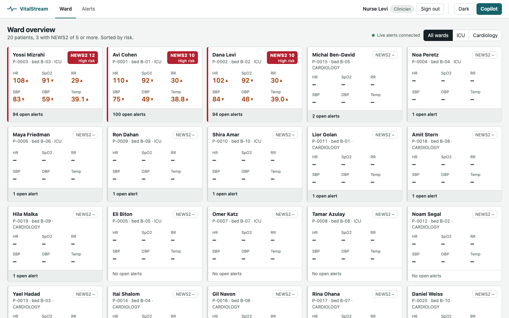
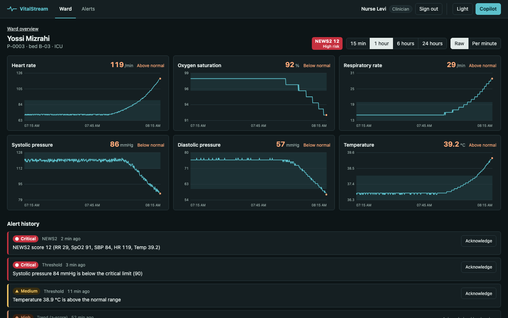
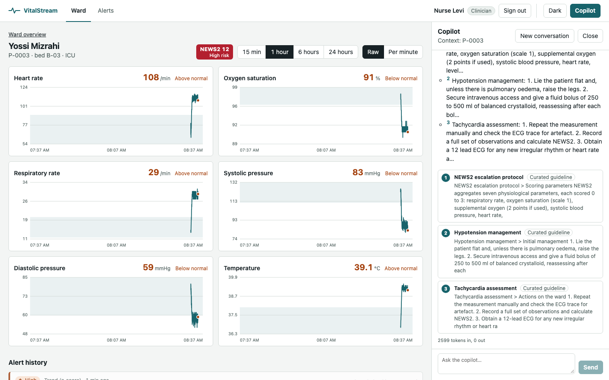
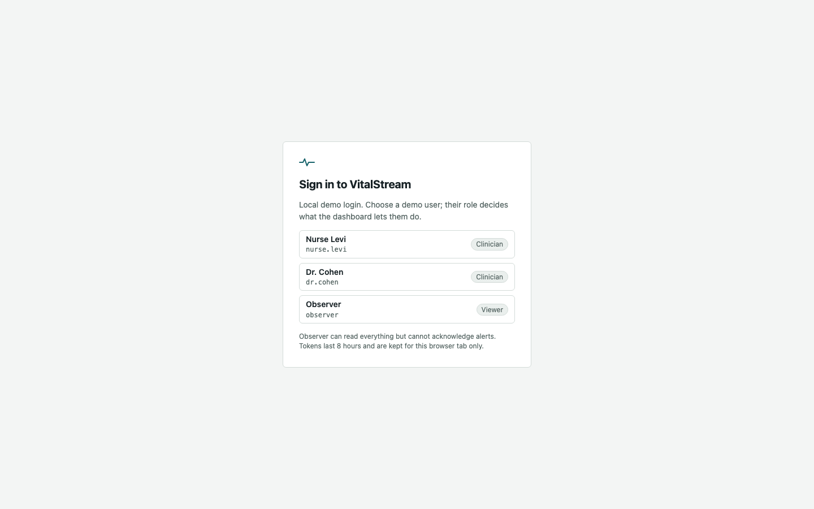
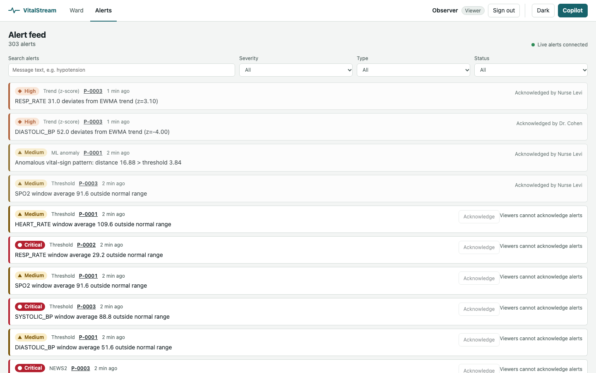

ingest-gateway
- Job
- Accept device data in three formats, normalise to one event, publish once.
- Edge
- Fail-closed API key filter on the decoded path, token bucket per device, Redis idempotency.
- Out
vitals.raw, HL7 ACK (AA/AE).
Writes flow left to right through Kafka. Reads come back through clinical-api, which owns the clinical record. The copilot never touches the stores of other services; it calls clinical-api over HTTP, the same way the dashboard does.
flowchart LR
subgraph Edge["Edge"]
DEV["Bedside devices / simulator
JSON batch · FHIR R4 · HL7 v2.5"]
end
subgraph Ingest["ingest-gateway · Spring Boot"]
GW["Auth (X-Api-Key, fail closed)
validate · token bucket · idempotency"]
end
K1[["Kafka vitals.raw
12 partitions, key patientId"]]
subgraph Stream["stream-processor · PySpark"]
SP["event-time guard → watermark 30 s
1-min windows
threshold · EWMA z · NEWS2 · KMeans"]
end
K2[["Kafka alerts.detected
6 partitions"]]
subgraph Clinical["clinical-api · Spring Boot"]
CA["consumer + retry/DLQ
Postgres + outbox
REST · SSE"]
end
subgraph AI["copilot · FastAPI"]
CP["LangGraph agent
hybrid RAG (pgvector + BM25)
MCP server"]
end
UI["dashboard · React
ward, patient, alerts, chat"]
N8N["n8n escalation"]
DEV -->|HTTPS| GW --> K1 --> SP --> K2 --> CA
GW -.-> R[(Redis)]
SP --> CS[(Cassandra
vitals)]
SP --> R
SP --> S3[(S3 Parquet
archive)]
CA --> PG[(Postgres)]
CA --> ES[(Elasticsearch)]
CA --> MQ{{RabbitMQ}}
CA --> SQS{{SQS}}
CA -. reads .-> CS
CA -. pub/sub .-> R
MQ --> N8N
UI -->|REST + SSE| CA
UI -->|chat SSE| CP
CP -->|tools over HTTP| CA
CP --> PG
CP --> ES
K2 -.->|poison| DLQ[["alerts.detected.dlq"]]
Solid arrows carry the alert path. Dashed arrows are reads, cache and side channels.
Four flows cover most interview follow-ups: how a reading becomes an alert, how one alert reaches four sinks exactly once, how the copilot answers, and how two clinicians acknowledging at once is resolved.
sequenceDiagram
autonumber
participant D as Device
participant G as ingest-gateway
participant R as Redis
participant K as Kafka
participant S as Spark job
D->>G: POST /vitals/batch (X-Api-Key, X-Correlation-Id)
G->>G: decode path, check key (fail closed), schema + range check
G->>R: Lua token bucket rl:{deviceId}
alt bucket empty
G-->>D: 429 + Retry-After
end
G->>R: SET idem:{eventId} NX EX 24h
G->>K: produce vitals.raw (acks=all, idempotent producer)
G-->>D: 202 {accepted, duplicates, rejected}
K->>S: micro-batch (maxOffsetsPerTrigger)
S->>S: drop events > 30 s ahead or > 24 h old, then withWatermark(30 s)
S->>S: 1-min window per patient → detectors
S->>R: latest vitals, EWMA state, alert:emitted ledger
S->>K: alerts.detected (alertId = uuid5)
sequenceDiagram
autonumber
participant K as Kafka alerts.detected
participant C as clinical-api consumer
participant P as Postgres
participant O as Outbox relay
participant X as ES · RabbitMQ · SQS
participant U as Redis pub/sub → SSE
K->>C: AlertEvent
alt cannot parse
C->>K: alerts.detected.dlq (bytes + error header)
end
C->>P: BEGIN · INSERT alert ON CONFLICT DO NOTHING · INSERT outbox rows · COMMIT
Note over C,P: duplicate alertId = no rows, no side effects
C->>U: publish (live feed)
loop every few seconds, batches of 50
O->>P: SELECT unpublished outbox FOR UPDATE SKIP LOCKED
O->>X: index / notify / escalate
O->>P: mark published_at
end
flowchart LR Q["Clinician question
+ patientId"] --> A{"LangGraph agent
max 6 steps"} A -->|tool| T1["get_patient_vitals
(clinical-api)"] A -->|tool| T2["list_alerts
(clinical-api)"] A -->|tool| T3["compute_news2"] A -->|tool| T4["search_guidelines"] T4 --> V["pgvector HNSW
cosine, top k"] T4 --> B["Elasticsearch BM25"] V --> F["Reciprocal rank fusion"] B --> F T1 & T2 & T3 & F --> A A --> S["SSE: session → tool_call → citation → token … → done(usage)"] A -.-> L["LLM provider
fake (default) or Claude"]
sequenceDiagram
participant A as Nurse A
participant B as Nurse B
participant API as clinical-api
participant DB as Postgres
A->>API: POST /alerts/42/ack {note} + Bearer JWT (CLINICIAN)
B->>API: POST /alerts/42/ack {note} + Bearer JWT (CLINICIAN)
API->>DB: read alert (version 0, OPEN)
API->>DB: UPDATE … SET status='ACKNOWLEDGED', version=1 WHERE id=42 AND version=0
DB-->>API: 1 row
API-->>A: 200 AlertView (version 1)
API->>DB: read alert (version 1, ACKNOWLEDGED)
API-->>B: 409 problem+json (already acknowledged)
Each service owns its paths, its tests, its Dockerfile and compose fragment, and its CI workflow. They only meet through the contract in docs/CONTRACTS.md.
vitals.raw, HL7 ACK (AA/AE).alerts.detected.ANTHROPIC_API_KEY.load --rate 2000 reports p50/p95; retries on 429 and 503.Each store is chosen for one access pattern. Polyglot persistence is the point to defend: the cost is more moving parts, the gain is that no store is bent into a shape it is bad at.
| Store | Holds | Access pattern | Why this store |
|---|---|---|---|
| Kafka | vitals.raw (12 p), alerts.detected (6 p), DLQ | Append, replay, partition by patientId | Ordering per patient, replay for recovery, consumer groups scale out. |
| Cassandra | vitals_raw PK ((patient, day), observed_at…), vitals_by_minute | Time range for one patient | Write-heavy time series; day bucket bounds partition size; 30-day TTL. |
| Postgres | patients, alerts (versioned), outbox; copilot documents, chunks (vector 384) | Transactions, joins, HNSW search | Outbox needs the alert and the event in one commit. pgvector keeps RAG in the same DB. |
| Redis | idempotency, token buckets, latest vitals, EWMA state, alert ledger, cache, pub/sub | Sub-ms key lookups with TTL | Shared state across gateway replicas and Spark micro-batches. |
| Elasticsearch | alerts, guidelines | Full text (english analyzer), BM25 | Alert search and the keyword half of hybrid retrieval. |
| RabbitMQ | topic exchange alerts.notify, routing alert.<severity> | Push to on-call consumers | Per-severity routing and DLX, fits work queues better than a log. |
| SQS | alert-escalations + DLQ (maxReceive 5) | Durable hand-off to AWS side | Managed queue for escalation workers outside the cluster. |
| S3 (Parquet) | raw vitals by dt=/hour= | Batch analytics, Athena | Cheap cold storage, partition pruning, training data for KMeans. |
Where each pattern lives in the code and the trade-off it buys.
Gateway parses FHIR, HL7 and JSON in adapters into one domain event. clinical-api's application layer depends on AlertRepository, not JDBC.
Buys: new device format = new adapter, tests without Docker.
Detectors (threshold, EWMA, NEWS2, KMeans) share one interface. The copilot's LLM provider and embedder are strategies chosen by env var.
Buys: fake LLM in CI, Claude in production, same code path.
Alert row and outbox rows commit together. A relay publishes with FOR UPDATE SKIP LOCKED and marks published_at.
Buys: no dual-write gap between DB and brokers. Costs: at-least-once delivery, so sinks must be idempotent.
Gateway: SET idem:{eventId} NX. clinical-api: INSERT … ON CONFLICT DO NOTHING on a deterministic uuid5 alertId. EWMA stores the last applied timestamp.
Buys: replays and retries are harmless.
Spring Kafka retries transient errors with backoff. Poison records go to alerts.detected.dlq with original bytes and an error header.
Buys: one bad message cannot block a partition.
Writes go through Kafka and the outbox. Reads are served from read-optimised stores: Cassandra history, Redis latest, ES search.
Buys: each read path scales alone. Costs: eventual consistency between views.
Vitals history cached in Redis for 10 s keyed by a hash of the query.
Buys: a ward of dashboards polling the same patient hits Cassandra once per 10 s.
Alerts carry version. Ack is a compare-and-set update; a lost race returns 409.
Buys: no row locks held across HTTP calls.
Kafka between services, Redis pub/sub fanning alerts to every clinical-api replica's SSE clients, RabbitMQ topic exchange to n8n.
Buys: producers never know their consumers.
LangGraph state machine: model → tools → model, capped at 6 steps. Tools are typed functions, also exposed over MCP.
Buys: answers grounded in live data, with citations.
One contract file for topics, schemas, ports, env vars and response shapes. JSON Schemas and wire samples have their own tests.
Buys: seven services built in parallel without waiting on each other.
Auth filter denies unless the decoded path is on an allowlist. Services refuse to start outside dev with default or short secrets.
Buys: a config mistake shows as an outage, not a leak.
Each vital maps to 0–3 points; the sum drives escalation. Computed per patient per 1-minute window from the window means.
| Total | Risk | Response |
|---|---|---|
| 0–4 | Low | Routine monitoring |
| 3 in one | Low-medium | Urgent ward review |
| 5–6 | Medium | Urgent response |
| ≥ 7 | High | Emergency response |
Inputs: respiration rate, SpO2, systolic BP, heart rate, temperature (consciousness and supplemental O2 not modelled).
O(1) memory per patient and metric, held in Redis ewma:{patient}:{metric} with the last applied timestamp so a replayed batch is skipped.
Known cost: at 3σ on Gaussian noise, about 0.3% of windows alert by chance. A minimum-n warm-up and alert suppression keep that in check.
Spark ML trains KMeans offline on standardised 6-feature window means (HR, SpO2, RR, SBP, DBP, temp) from the S3 archive. Centroids are exported to JSON.
Scoring runs in plain Python on the exported centroids: no JVM round trip per window, and the maths is unit-testable.
Merges the pgvector (cosine, HNSW) list and the BM25 list without calibrating their incomparable scores. Documents found by both rise to the top. Chunks are ~400 tokens with 60 overlap.
50 req/s, burst 100 per device. Runs as one Lua script so read-modify-write is atomic across gateway replicas.
Spark's watermark = max event time seen − 30 s. Windows older than that are finalised and late data dropped.
Attack: one event stamped a year ahead pushes the watermark forward, so every real event looks late and alerting stops silently.
Fix: drop events more than MAX_FUTURE_SKEW ahead (≤ watermark delay, asserted at startup) or more than 24 h old before withWatermark; count them in vitalstream_events_dropped_total. The gateway also rejects > 5 min ahead.
The same window always yields the same alertId, so Spark's update-mode re-emits and Kafka redeliveries collapse into one row downstream. The simulator uses uuid5 event ids for the same reason.
Logs carry patientRef, never the raw id. Stable, so you can correlate one patient across services; keyed, so it cannot be reversed by hashing all ids.
patientId: per-patient order, parallel across 12 partitions.maxOffsetsPerTrigger for backpressure; checkpoints for exactly-once source offsets.acks=all + idempotence: no duplicates from producer retries.service and correlationId, carried HTTP → Kafka header → RabbitMQ/SQS attribute.Synthetic data only, but built as if it held PHI. HIPAA's technical safeguards map to access control, audit (correlated logs), integrity (idempotency, versioning) and transmission security (TLS in the AWS stack).
iss, aud = clinical-api, sub, exp with 30 s skew. 401 with WWW-Authenticate: Bearer, 403 problem+json.name, else sub), never from the body, and every ack is audit-logged.POST /api/v1/dev/token is opt-in. It exists only when CLINICAL_DEV_TOKENS_ENABLED=true (set by local compose only), APP_ENV=dev and no JWKS; otherwise the bean is not registered and the route is a plain 404. The flag with APP_ENV=prod or a JWKS URI stops startup.GET /api/v1/me before any LLM call, forwards the same token on tool calls and binds sessions to sub. The SERVICE token is used only by /mcp.ALLOWED_HOSTS) against DNS rebinding.APP_ENV guard: outside dev, secrets must be ≥ 32 chars and not defaults.The filter matched the raw URI. /api/v1;x=1/vitals/batch and /%61pi/v1/… returned 202 without a key. Fixed by deciding on the decoded, normalised path and rejecting ambiguous ones; regression tests for each variant.
A single far-future timestamp could freeze alerting for every patient. Fixed with the event-time guard before the watermark, plus the gateway's 5-minute future limit.
clinical-api served alerts, vitals and acknowledgements to anyone who could reach port 8082, and the ack body carried a free-text by field, so any caller could sign as any nurse. Fixed with JWT validation, roles, and the actor taken from the token.
The first auth contract (mine) gave copilot a SERVICE token for its tool calls while chat stayed open. Anyone could ask copilot to read patient data with copilot's privileges. Fixed by requiring the user's JWT on chat and forwarding it; the SERVICE token stays on /mcp.
The escalation workflow stored the fetched bearer token in a Set node, so it landed in n8n's saved execution history. Fixed by reading it inline in the request header and turning execution saving off.
The token endpoint turned on whenever APP_ENV resolved to dev, and it defaults to dev. A deployment that forgot the variable would mint any role without a password, signed with the public dev key. Now it needs an explicit flag, and the flag outside dev stops startup. Caught by an automated security review after merge.
NetworkPolicy allowed 0.0.0.0/0, which includes the cloud metadata service and the cluster. Now excludes RFC1918, link-local, CGNAT and cluster CIDRs, and is off for services that need no internet.
Public EKS API from anywhere, Redis without AUTH, MSK without client auth, node IMDS reachable from pods (IRSA bypass). All four closed, each with a failing terraform test first.
flowchart LR PR["Pull request"] --> PW["Per-service workflow
paths filter"] PW --> L["lint · format · types"] --> U["unit (no Docker)"] --> I["integration
Testcontainers"] --> C["coverage ≥ 80 %"] C --> D["docker build"] D --> E["compose e2e"] E --> M["Manager review → merge"] M --> G["Build + push to GHCR"] G --> K["Helm on kind / EKS"] T["Terraform: validate + test only"] -.-> K
make infra-up starts Kafka (KRaft), Postgres+pgvector, Redis, Cassandra, Elasticsearch, RabbitMQ, LocalStack, Prometheus, Grafana, Kibana, n8n. make up adds the services, make simulate drives them.
One Helm chart: Deployment, Service, ConfigMap, ServiceAccount per service, HPA for gateway and clinical-api, PDBs, NetworkPolicies. kind values for a laptop cluster. 59 helm-unittest cases, kubeconform strict.
Modules: VPC (+ S3/SQS endpoints), EKS, RDS, MSK, ElastiCache, SQS, S3, ECR, IAM. 36 terraform test cases with a mock provider. A LocalStack variant applies S3 and SQS locally. Never applied to real AWS.
GitHub Actions per service with path filters. Delivery adds image builds to GHCR, image scanning, tflint, compose end-to-end tests, a Jenkinsfile and a GitLab pipeline.
n8n workflow subscribes to critical notifications, waits, re-checks the alert, and escalates if still open.
A manager agent wrote the contract and reviewed every PR; parallel worker agents built each service test-first in their own branches. Every merge was verified locally and, once enabled, in CI.





| Area | Decision or gap | Production answer |
|---|---|---|
| End-user auth | clinical-api validates JWTs with roles and per-user audit; locally a dev endpoint mints HS256 tokens. Any CLINICIAN can see every patient. | OIDC provider (Keycloak / Cognito) through the existing JWKS setting, short tokens with refresh, and ward / care-team scoping on every read. |
| Detection | Window results are collected to the driver each micro-batch to run detectors. | Move detectors into mapGroupsWithState / pandas UDFs so they scale with executors. |
| EWMA noise | |z| ≥ 3 alerts on ~0.3% of normal windows. | Require persistence (k of n windows), per-metric thresholds, clinician feedback loop. |
| Outbox | Failing rows retry forever; relay transaction spans sink calls. | Attempt counter + backoff + parking table; claim rows, commit, then call sinks. |
| Live feed | SSE has no replay on reconnect. | Honour Last-Event-ID by reading missed alerts from Postgres. |
| AWS auth | Terraform requires MSK IAM and Redis AUTH/TLS; services speak PLAINTEXT and redis://. | Add the MSK IAM SASL client and rediss:// before any real deploy. |
| NEWS2 placement | Dashboard computes NEWS2 from latest vitals. | Serve the server score from clinical-api so every client agrees. |
| Exactly once | At-least-once transport, idempotent sinks. | Kafka transactions add cost and still stop at system edges; idempotency is the portable answer. |
Where each technology from the CV is exercised, so any interview question can point at real code.
| Skill | Where in VitalStream |
|---|---|
| Python · Java Spring Boot | Spark job, copilot, simulator · gateway, clinical-api |
| LLM · RAG · Vector DB | Pluggable Claude provider, chunker, pgvector HNSW + BM25 with RRF |
| MCP · n8n · agents | Copilot MCP server, n8n escalation workflow, LangGraph tool agent |
| Kubernetes · Docker | Multi-stage non-root images, Helm chart, kind cluster, HPA, PDB, NetworkPolicy |
| AWS EC2/ECS/EKS/RDS/ECR/SQS/Athena | Terraform EKS, RDS, ECR, SQS, MSK, ElastiCache; S3 Parquet partitions ready for Athena; LocalStack locally |
| SQL · NoSQL | Postgres (Flyway, outbox, pgvector) · Cassandra time series, Redis |
| Kafka · RabbitMQ (ActiveMQ-style queues) | Event backbone with DLQ · topic exchange routing by severity |
| Spark · Spark ML | Structured Streaming with watermarks · KMeans anomaly model |
| Elasticsearch · Redis | Alert search, BM25 · idempotency, rate limit, cache, pub/sub, detector state |
| Jenkins · GitHub Actions · GitLab | Per-service Actions, Jenkinsfile and GitLab pipeline from the delivery workstream |
| Streaming · high scale | Partitioned Kafka, stateless gateway, backpressure, measured 2,002 ev/s |
| HIPAA · FHIR · HL7 | FHIR R4 and HL7 v2.5 ingestion, PHI-safe logging, access control, encryption in transit on AWS |
Three layers. The gateway drops duplicate event ids with SET NX. Spark derives alertId with uuid5 from patient, type, metric and window start, and a Redis ledger stops update mode from re-emitting the same alert each micro-batch. clinical-api inserts with ON CONFLICT DO NOTHING, so a redelivered alert creates no row and no outbox entries, which means no second notification.
Two writes to two systems cannot be atomic. If the process dies between them you either notify about an alert that does not exist or store one nobody hears about. The outbox puts the intent in the same transaction as the alert; a relay delivers it at least once, and sinks are idempotent by alertId.
The gateway rejects readings more than 5 minutes in the future. The Spark job drops anything further ahead than the watermark delay, or older than 24 hours, before the watermark is computed, and counts the drops. Without that guard one bad clock advances the watermark and every later event is treated as late.
At one reading per vital per second that is about 600k events/s. Raise vitals.raw partitions (patientId keying keeps order), run more gateway replicas behind the HPA, and move detector logic off the driver into stateful grouped operations so Spark scales by executors. Cassandra scales horizontally with the day-bucketed key. Watch consumer lag and outbox lag as the scaling signals.
Embeddings catch paraphrases; BM25 catches exact clinical terms, drug names and codes that small embedders blur. RRF merges both rankings without score calibration, and chunks found by both rise to the top. Citations carry provenance so a clinician can check the source.
It does not invent vitals: numbers come from tool calls against clinical-api, and NEWS2 comes from a deterministic tool. Guidance comes from retrieved, curated documents with citations. The agent is capped at 6 steps, and the default provider is a deterministic fake so tests are stable.
Each request reads the alert and runs UPDATE … WHERE id = ? AND version = ?. Exactly one update matches; that request gets 200 with the new version. The other gets 409 problem+json, and the dashboard shows who acknowledged it.
Allowing egress to 0.0.0.0/0 also allows the cloud metadata endpoint and every pod in the cluster. A compromised pod could read node credentials or move sideways. The fix excludes private, link-local and cluster ranges, and turns internet egress off for services that do not need it. Combined with IMDSv2 hop limit 1, node credentials are out of reach.
It acts as the user, not as itself. Chat requires the user's JWT; copilot checks it with /api/v1/me before spending any LLM tokens, then forwards the same token on every tool call, so clinical-api applies that user's role. The service's own token is used only by the MCP endpoint, which has its own bearer check. My first contract got this wrong; review caught it.
A body field is whatever the caller types, so anyone could sign as anyone. The token's name or sub is signed by the issuer. The API ignores any by field and writes the actor and alert to an audit log.
Plug a real OIDC provider into the JWKS setting and add ward / care-team scoping, since today any clinician sees every patient; bounded outbox retries with a parking table; SSE replay from Postgres; MSK IAM and TLS Redis in the services; detectors moved off the Spark driver.
VitalStream is a portfolio system with synthetic patients. It is not a medical device and its guidance is not clinical advice.